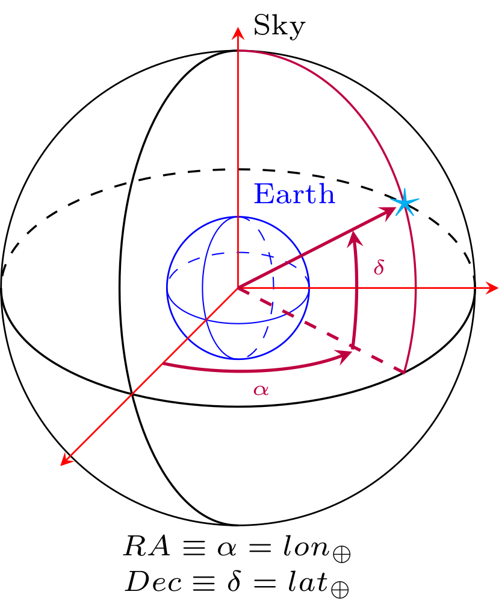

GW Source Characterization¶
In GWDALI, a gravitational-wave source is described through a set of free parameters defining the binary intrinsic and extrinsic properties.
The framework supports multiple parameterizations for masses, distance, inclination, and spins. Independently of the chosen parameterization, a valid source description must contain:
exactly 2 mass parameters;
exactly 1 distance parameter;
exactly 1 inclination parameter;
exactly 6 spin parameters.
Additionally, detector-frame waveform generation requires:
RADecpsit_coalphi_coal
Mass Parameterizations¶
The following mass parameterizations are currently supported:
Parameter |
Description |
|---|---|
|
Redshifted mass of the primary compact object, \((1+z)m_1\) [\(M_\odot\)]. |
|
Redshifted mass of the secondary compact object, \((1+z)m_2\) [\(M_\odot\)]. |
|
Symmetric mass ratio,
\[\eta \equiv \frac{m_1m_2}{(m_1+m_2)^2}\]
|
|
Redshifted chirp mass,
\[\mathcal{M}_c \equiv
(1+z)\eta^{3/5}(m_1+m_2)\]
[\(M_\odot\)]. |
|
Redshifted total mass,
\[M \equiv (1+z)(m_1+m_2)\]
[\(M_\odot\)]. |
|
Mass ratio,
\[q \equiv \frac{m_2}{m_1},
\qquad m_1 > m_2\]
|
|
Inverse symmetric mass ratio, \(\eta^{-1}\). |
|
Logarithm of the redshifted chirp mass,
\[\ln\left(\frac{(1+z)M_c}{M_\odot}\right)\]
|
|
Logarithm of the symmetric mass ratio, \(\ln(\eta)\). |
|
Dimensionless mass difference,
\[\delta_M \equiv \frac{m_1-m_2}{m_1+m_2}\]
|
Distance Parameterizations¶
Exactly one distance parameter must be provided.
Parameter |
Description |
|---|---|
|
Luminosity distance \(d_L\) [Gpc]. |
|
Inverse luminosity distance, \(d_L^{-1}\) [\(\mathrm{Gpc}^{-1}\)]. |
|
Inverse squared luminosity distance, \(d_L^{-2}\) [\(\mathrm{Gpc}^{-2}\)]. |
|
Inverse square-root luminosity distance, \(d_L^{-1/2}\) [\(\mathrm{Gpc}^{-1/2}\)]. |
|
Logarithm of the luminosity distance,
\[\ln(d_L/\mathrm{Gpc})\]
|
|
Inverse logarithmic luminosity distance,
\[\frac{1}{\ln(d_L/\mathrm{Gpc})}\]
|
Inclination Parameterizations¶
Exactly one inclination parameter must be provided.
Parameter |
Description |
|---|---|
|
Inclination angle \(\iota\) [rad]. |
|
Cosine of the inclination angle, \(\cos(\iota)\). |
Spin Parameterizations¶
Exactly six spin parameters must be provided.
Cartesian Spin Coordinates¶
Parameter |
Description |
|---|---|
|
Cartesian spin components of the primary compact object. |
|
Cartesian spin components of the secondary compact object. |
Spherical Spin Coordinates¶
Parameter |
Description |
|---|---|
|
Dimensionless spin magnitude of the primary compact object, \(\chi_1 \equiv |\vec{S}_1|\). |
|
Polar angle of the primary spin [rad]. |
|
Azimuthal angle of the primary spin [rad]. |
|
Dimensionless spin magnitude of the secondary compact object, \(\chi_2 \equiv |\vec{S}_2|\). |
|
Polar angle of the secondary spin [rad]. |
|
Azimuthal angle of the secondary spin [rad]. |
Symmetric/Antisymmetric Spin Coordinates¶
Parameter |
Description |
|---|---|
|
Symmetric spin combination,
\[\chi_s = \frac{\chi_1+\chi_2}{2}\]
|
|
Antisymmetric spin combination,
\[\chi_a = \frac{\chi_1-\chi_2}{2}\]
|
Extrinsic Parameters¶
Parameter |
Description |
|---|---|
|
Right ascension [deg]. |
|
Declination [deg]. |
|
Polarization angle [rad]. |
|
Coalescence phase [rad]. |
|
Coalescence time [s]. |
Example: Source Dictionary Construction¶
Below we show a complete example of a gravitational-wave source
dictionary compatible with get_strain().
This example uses:
(Mc, eta)as mass parameterization;dLas distance parameterization;iotaas inclination parameterization;Cartesian spin coordinates.
The resulting dictionary contains the required 15 parameters.
import numpy as np
GwPrms = {}
#========================================
# Distance sector (1 parameter)
#========================================
GwPrms['dL'] = 5.0 # Luminosity distance [Gpc]
#========================================
# Mass sector (2 parameters)
#========================================
GwPrms['Mc'] = 30.0 # Chirp mass [Msun]
GwPrms['eta'] = 0.24 # Symmetric mass ratio
#========================================
# Inclination sector (1 parameter)
#========================================
GwPrms['iota'] = 1.2 # Inclination [rad]
#========================================
# Extrinsic parameters
#========================================
GwPrms['RA'] = 120.0 # Right ascension [deg]
GwPrms['Dec'] = -30.0 # Declination [deg]
GwPrms['psi'] = 0.5 # Polarization angle [rad]
GwPrms['t_coal'] = 0.0 # Coalescence time [s]
GwPrms['phi_coal'] = 0.0 # Coalescence phase [rad]
#========================================
# Spin sector (6 parameters)
#========================================
GwPrms['sx1'] = 0.0
GwPrms['sy1'] = 0.0
GwPrms['sz1'] = 0.5
GwPrms['sx2'] = 0.0
GwPrms['sy2'] = 0.0
GwPrms['sz2'] = -0.3
print(GwPrms)
The source dictionary can then be passed directly to the waveform generation routines:
import GWDALI as gw
freq = np.arange(1.0, 1024.0, 0.1)
h = gw.get_strain(
detectors,
GwPrms,
freq,
approx="IMRPhenomD"
)
Sky Localization¶
In GWDALI, astronomical coordinates (RA, Dec) are aligned with the
geocentric coordinates (longitude lon and latitude lat),
such that:
{kind=link}
